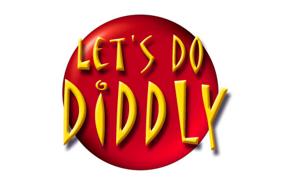

 Design Document
Introduction: The Ultimate GameshowIn 1989 Rob Landeros, (creator of The 7th Guest and The 11th Hour), teamed up with Peter Oliphant to conceive and develop Lexi-Cross, a game which was later published by Interplay. Lexi-Cross was billed as "the gameshow of the future" combining the fun and excitement of such classic TV and board games as Crosswords, Wheel of Fortune, Password and Trivial Pursuit with elements of Battleship, Concentration and Scrabble. Sound complex? It isn’t. It’s simple, fast and lots of fun. It’s the Ultimate Gameshow. And the fact that it has that elusive fun-factor is proven. It won or was nominated for several awards. Computer Gaming World nominated it for "Best Strategy Game of the Year" and GAMES Magazine gave it a perfect score. Computer Player’s Denny Atkin rated it in his personal top 10 most fun games. Landeros in association with David Wheeler, have designed a new version of the Ultimate Gameshow for the millennium based on what we’ve learned from user feedback and from the success of such games as You Don’t Know Jack. Our working title is "Let's Do Diddly". Diddly is a one, two and three-player game which can be delivered and played on disc or via the Internet. If opponents are lacking, it can be played against AI opponents. It is played in two Rounds (one Round short play is optional) plus a Bonus Round. It is similar to its predecessor Lexi-Cross, but has been improved in several key areas. For instance, Lexi-Cross used two gameboards, one for each player. The new version uses one gameboard for all players. Another major feature is the use of the audio for the show’s Host and Hostess. They prompt the players to take specific actions and to keep the game moving right along at a slick pace. Lexi-Cross did some of this, but was limited to text messages and audio blips and bleeps. Many of the little features of Lexi-Cross have been sacrificed for the sake of accessibility, speed, game flow and game balance. The result is gameplay that is fun and lively, yet not complex or hectic. Total playing time for one "show" is about 40 minutes. This is a perfect length of time for a gameshow product. For those with less time on their hands, there is an option to play a shorter round. The creation and production of complete rounds is easy and economical. Diddly can be extended into different "theme shows" via expansion packs. Lexi-Cross ReviewBecause the basics of Diddly are predicated on the rules of Lexi-Cross, we include a Lexi-Cross Review.
OverviewThe object of the game is to reveal the words that are concealed under a matrix of Tiles and then solve the Puzzle that the words suggest by typing in the answer before one's opponent. These are called Theme Puzzles, because all the words in the matrix share a common theme. Monies are scored for positive results. Hidden within the matrix are various Tokens which have differing effects upon the gameplay. Trivia Tokens for instance allow Players to double their money by wagering on their ability to successfully answer Trivia questions. After the last Round is played, there is a Bonus round. The Player with the most money after completion of the Bonus Round is declared the winner. What follows is a more detailed
description of the workings of the game. Please bear in
mind that reading through all the rules makes it appear
more complicated than it really is. Golf is a very simple
game... hit the ball and put it in the hole. But if you
ever read the official rules, you might think it was too
complicated to learn. Diddly's gameplay is actually very
intuitive and will soon become second nature to any
player. We stress this point because the accessibility of
Diddly is an important factor to its fun, and ultimately
to its success and popularity.
Pre ShowWelcome and Introduction - The Hostess begins by introducing herself. (illustration) Number of Players - She then asks for the number of Players. The choices are 1, 2 or 3. (illustration) (For special single player mode, see Errata) Full or Short Game - Players are asked if they wish to play a Full Game or a Short Game . A Full Game consists of 2 Puzzle Rounds and a Bonus Round. A Short Game consists of 1 Puzzle Round and a Bonus Round. (illustration) Choose Character - Players are asked to choose a Character from a menu of Character icons. This will be the Player's onscreen identity. (illustration) SetupAt the beginning of each round, a Puzzle is randomly selected from a list of Puzzles that have not been previously played. The words that make up the Puzzle are then hidden behind the matrix of Red Tiles of the Puzzle Board. All the words are related to a common theme. Words may cross at common letters and will not touch unless they cross. A number of special Tokens are also hidden behind Red Tiles. In order to reduce the time it takes to play a round, several Blank Spaces are exposed initially. (See Errata) Puzzle ClueAt the start of each Round there is a major Clue to the Puzzle's answer. This Puzzle Clue is not spelled out, but is instead indicated by underscore characters at the top of the screen. As letters are guessed from the Wheel, those letters appear in place of their underscore counterparts and the Clue is slowly revealed. Menu BarAll play options occur in the Menu Bar area below the Main Board. Player DocketRunning vertically along the right side of the screen is the Player Docket. It is here that the Player's scores are displayed below their respective Character Icon. If a Player currently possesses Tokens, they are displayed here also. When it is a Player's turn, his Icon, Tokens and Score will be highlighted and/or animated, and at the same time those of his opponents are ghosted and static. (It may be possible to attach an animated Player Icon to the pointer cursor.) Help ButtonIn the upper left hand corner of the screen is a red button that usually serves for labeling the current game segment. But it also serves as an onscreen Help Button. Clicking this button, or label, takes you to the general purpose Help screen. This screen contains access to Options, Controls and Rules. It also serves effectively as a Pause Game screen. The keyboard equivalent of the Help
Button is the F1 key.
Game Rules and MechanicsPlayers alternate turns. During a turn, a Player may do any one of four possible actions when available. FLIP (reveal a tile), SPIN (spin the Wheel and then pick a letter), or ANSWER (solve the puzzle). The default state is to FLIP which a Player may do by pointing and clicking any Red Tile on the Board. The other options are selected from the Menu Bar, or by typing in the keyboard equivalent. FlipA Player reveals a space by selecting a tile that was previously unselected (Red Tile). What happens next depends on what was concealed behind the tile. If a Letter Space is revealed, indicated by a White Space or White/Yellow Lettered Space, then the Player may continue his/her/its turn. A Yellow Space indicates the intersection of words (if there is a guessed letter there). The Player scores points for exposing these Letter Spaces. (See Errata) If there was nothing concealed (a Blank), then the Player's turn is over. Otherwise, one of the following Tokens was revealed: Money Token – indicated by a flashing plus or minus sign. If it is a Plus Money Token, then the Wheel spins and that amount is added to the Player’s score. If it is a Minus Money Token, the amount is subtracted from the Player’s score. The amounts range from $1,000 to $5,000 for the Minus Tokens, and $5,000 to $10,000 for the Plus Tokens. In any one Round, there are five Plus and five Minus Money Tokens. Vowel Token – indicated by a round red token with the letter V on it. The Vowel Token is then stored below the Player's name. In any one Round, there are five Vowel Tokens that may be collected. Safety Token - indicated by a round blue token with the letter S on it. The Safety Token is stored below the Player's name and below the Vowel Tokens, if any. If a player lands on an End Turn bar, the Safety Token is automatically used. In any one Round, there are five Safety Tokens that may be collected. Trivia Token – indicated by a question mark. When this token is exposed, the Player is given a multiple choice Trivia Question. In any one Round, there are five Trivia Tokens that may be found. (See Errata) Steal Vowel Token - Automatically steals a Vowel Token from next Player. The Player's turn continues. If none of the other Players has a Vowel Token, there is no effect and the Player's turn ends. In any one Round, there are five Steal Vowel Tokens that may be collected. Steal Safety Token - Automatically steals a Safety Token from next Player. The Player's turn continues. If none of the other Players has a Safety Token, there is no effect and the Player's turn ends. In any one Round, there are five Steal Safety Tokens that may be collected. TriviaThe Trivia presentation area appears in place of the Main Board. As in Jeopardy, the category is stated as a lead-in or hint to the question. There are a variety of trivial questions in text, audio and visual form. The Category is given along with the trivia type (text, audio or visual, as indicated by the corresponding triva type graphic) and and the Player may then wager up to all the money he has earned for the Round. (illustration) If the Player has less
than $10,000 then he may wager up to $10,000. The Wager
Bar is a gradated green bar with $0 at one end and the
Player's total winning bet at the other. Player selects a
point along bar to choose the amount of the wager rounded
to the nearest $100. If the Player wagers $0, then his
turn ends immediately.
Following
the wager, the Trivia question and the possible answers
are presented and the Player chooses an answer by
clicking on it with the mouse, or typing in the answer
number from the keyboard or numeric keypad. If the Player
answers incorrectly, the amount wagered is subtracted
from his total and his turn ends. If the answer is
correct, the amount is added to his total and his turn
continues.
SpinWhen enough White tiles have been
revealed, a Player should start to pick letters. Choosing
the Spin option will cause the Wheel to appear in the
Menu Bar area. It will automatically spin, the value bars
rotating in like a slot machine, from right to left,
slowing down until one bar stops in the highlighted
selection slot.
Money Bars –
indicated by a numerical value. The wheel is randomized
at the start of the first spin. Bar values are as
follows:
When a Money bar is landed
on, the Alphabet Bar appears above the Wheel. Any letters
that have been previously selected are ghosted. If the
Player does not have a Vowel Token, the letters A, E, I,
O, and U are also ghosted. The Player selects a letter by
clicking on it with the cursor or by typing it from the
keyboard. If there are any White Spaces containing the
chosen letter, they are exposed at this time.
Each letter has its own
point value. Letter values are as follows: When the cursor passes over a letter, its point value is displayed multiplied by the value of the money bar. Money is awarded to the Player in the following amounts: (letter value) x (bar money value) x (# of letters flipped) The above calculation should be displayed in the Menu Bar area when letters are exposed. For example: 8 x $800 x 2 = $12,800 If a Space is yellow, then it indicates where two Puzzle Words cross and is accordingly worth double. If at least one letter is exposed, the Bar on the Wheel is then replaced by an End Turn bar and the Player's turn continues. If not, then the Player's turn comes to an end. Money Bars are returned to their original value at the beginning of each Player's turn. (The Wheel is dynamic. The more a Player keeps spinning the Wheel during a turn, the number of End Turn bars increases while the number of Money Bars decreases on the Wheel.) Row / Column - There are bars labeled either Row or Column. When the Wheel falls on a Row bar, the Player may choose any space on any row of the matrix and the entire row will be exposed one tile at a time. Any tokens apply as usual. A column is exposed in the same manner when the Wheel falls on a Column bar. If a Trivia Token is exposed and the Player answers incorrectly, the row or column continues to be exposed, but when it is finished, the Player's turn is over. End Turn – If the Wheel lands on one of these bars, then the Player's turn comes to an end. If the Player has accumulated any Safety Tokens, one of them is automatically redeemed and Player's turn continues. AnswerA Player chooses the Answer button when
he believes he knows the answer to the Puzzle. The Menu
Bar switches to Answer Puzzle input mode. The letters in
the answer are indicated by underscores. Blank spaces
indicate character spaces. These spaces are filled in as
the Player types in his answer. The Player is not
required to type in the spaces. In effect, the space key
is disabled. Typing of answer is not case sensitive.
If the Player answers correctly, the Player is declared the winner of the Round. If the Player's guess is incorrect, then he loses his turn (no matter what tokens he possesses). The solver of the puzzle wins a Jackpot of $50,000 which is added to his total score. The loser(s) keep their points and carry them over to the next round. After the last round, a Bonus Round is played to determine the overall winner. Time LimitsThere are reasonable time limits imposed for all phases of the game. The Host gently prompts the player as time begins to run out. The timing is not strict and varies within reasonable parameters. This is to give the feeling of an organic process or experience, much as a television gameshow gives a certain amount of discretion to the gameshow host. Bonus RoundAll Players participate. The Host
announces the Category. One Word Space is revealed at a
time and a Clue is given for that word. Starting with the
Player with the highest score, each Player in turn tries
to expose the entire word by choosing letters. If he
chooses an incorrect letter, the turn passes to the next
player. When a word is completed, the next Word Space is
revealed. This continues until all the words have been
completed.
There are no Tokens in this phase of the game. A strict time limit is imposed for the selecting of letters. If a Player fails to select a letter, his score is diminished by 10% and distributed evenly to his opponent(s). The turn passes to the next Player. Points are scored for each letter guessed and for each word completed. End GameWhen the Bonus round is complete, the Winner is declared. The Players are then prompted as to whether they wish to play again or quit. (illustration) ErrataScreen Samples - For an index of all screen samples, click here. Banner Animations - Between Puzzle Rounds, Trivia Questions and Bonus Round, there are animations. Click here for screen samples. Screen Resolution - Resolution of the screen alwarys remains at 640x480. If the monitor is set to a higher resolution, the play screen is centered in a field of white. Starting Blanks - In order to reduce the time it takes to play a Round, several Blank Spaces are exposed initially so that the number of non-letter spaces is equal to the number of Red Tiles on the Board. So if there were 70 letters in a Puzzle, for instance, the number of non-letter spaces would be 80. Therefore 10 Red Tiles would be exposed. Trivia Token Distribution & Frequency - A weakness regarding Trivia Tokens (and other tokens for that matter) lies in the fact that if the Players do not choose to Flip Red Tiles, the tokens will not come into effect during the game. This is especially unfortunate in regard to trivia, which is a fun and important factor of the gameplay. Therefore Diddly requires a scheme that will allow Trivia Tokens to be uncovered evenly over the time span of the given Round. Here is one possible solution. Start a new Round by populating the board with 10 hidden trivia tokens and as more tiles are exposed, increase that number, perhaps adding one trivia token for every ten tiles that are exposed. (These numbers may need to be played with) This helps insure that Trivia Tokens will appear during the early, middle and late stages of the Round, counteracting the tendency of players to stop finding Trivia Tokens because they have slowed in their flipping of Red Tiles toward the end of the Round. Of course, when five Trivia Tokens have been revealed, the remaining Trivia Tokens are removed from the board. Another factor that helps this situation is the inclusion of an extra Column Bar on the Wheel so that more spaces are revealed during the later Spinning phase of the Round. No More Moves - In the event that all the spaces on the Board are exposed and all the possible letters have been guessed, then starting with the Player who made the last play, each Player gets one chance to guess the answer to the Puzzle. If no one guesses, no one gets the Jackpot points and the game continues on to the next Round. Time Limitations - A Player will have 10 - 13 seconds to make any given move during a normal Round (including Trivia). It is the intent, especially with the Host VO's, to be a little inexact so as to give it an organic, human feeling. Sometimes the Host might be more lenient than at other times. After about 8 seconds the Player will be given a warning or prompt. If the Player has not moved 4 or 5 seconds later, he is called for time and his turn passes to the next Player. The time limit is shorter (8 seconds) during the Bonus Round and is adhered to more strictly and exacting. There need not be any prompting. The music and ticking sound effect conveys the urgency. Scoring Letter Spaces - The Player scores points for exposing Letter Spaces. Scoring is progressive. $100 for first Letter Space, $200 for second, etc. Amount is reset for Player's next turn. Single Player Mode In Single Player Mode, the player is allotted 25 incorrect guesses per Puzzle and per Bonus Round. An incorrect guess is defined by any action that would normally end a Player's turn in regualar multiplayer mode. The incorrect guesses are graphically displayed as a 5x5 grid of miniature red tiles in the Player Docket. (illustration) With each incorrect guess, a tile is removed from the grid. The game ends when all 25 tiles are removed. |